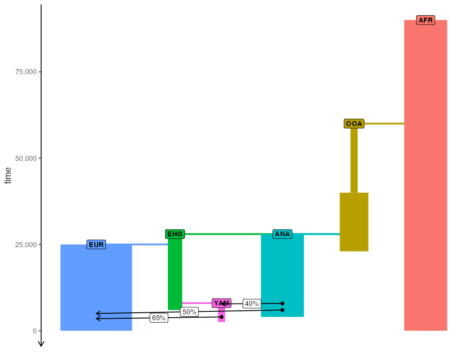
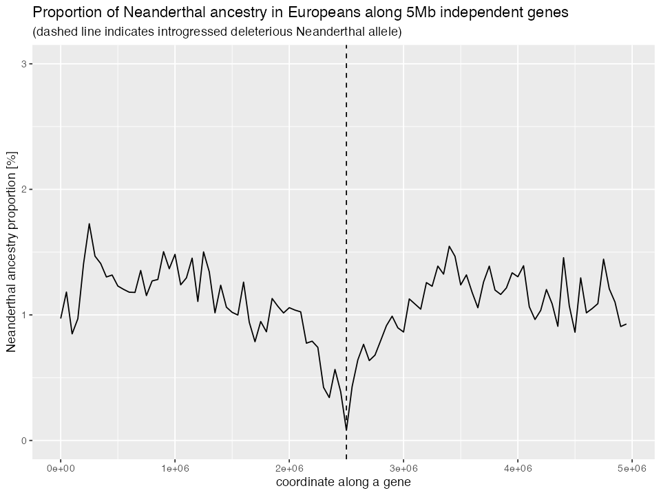

Extending models with custom SLiM code
Source:vignettes/vignette-11-extensions.Rmd
vignette-11-extensions.RmdIntroduction
slendr has been designed specifically for the purpose of making it as easy as possible to program population genetic simulations of spatio-temporal demographic histories using SLiM. Our primary goal was to have the means to simulate arbitrarily complex spatial scenarios and simulate data which could be used for development of new spatial inference population genetic methods (and benchmarking of current methods). This functionality is briefly described in vignette #1 and in more detail in vignette #6.
After the spatial simulation features have been implemented, it
turned out to be trivial to support also “traditional”, non-spatial
demographic models, such as those described in vignette
#4 and vignette #5 – tree-like models with population
divergences, gene-flow events, and popularion resize events, like you
can see in any evolutionary biology textbook. Because non-spatial models
can be often implemented (and executed) more efficient in a coalescent
setting, we added the possibility to run any compiled slendr
model not through SLiM but through a back-end script implemented in
msprime, hidden behind the slendr function
msprime().
Throughout all this time, slendr models were purely neutral, without much planning to extend simulations toward non-neutral scenarios. However, with the easy specification of non-spatial demographic models and their simulation with the slendr/SLiM engine, many users have been asking about the possibility to simulate non-neutral scenarios or, more generally, customization of the simplified genome architecture assumed by slendr by default (a single chromosome with uniform recombination and purely neutral mutations).
This vignette describes how this can be done with slendr.
Why even do this if SLiM can do these things on its own? Fair question! After all, SLiM can obviously simulate nearly any kind of conceivable evolutionary model.
One motivation for supporting non-neutral customized genomic architecture and mutation models in slendr is from users who find it easier to program complex “base” demographic models in R (such as models with complex history of population divergences, gene-flow events, resizes), let slendr take care of demographic history . You only have to provide custom SLiM code for non-neutral evolution.**
Disclaimers and caveats
If you want to use the slendr/SLiM extension functionality described in this vignette, you should be aware of the following restrictions and guidelines:
The extension functionality is primarily design to support complex selection models using customized SLiM snippets while still using slendr for handling the basic demographic modeling scaffold (population splits, resizes, gene flows, etc.). Because the handling of these demographic events remains unchanged even for
slim()models, the coalescentmsprime()engine of slendr (which implements the coalescent, neutral counterpart of slendr models) has not changed and there is no means to customize it.It is assumed that the SLiM script bundled with slendr stays unmodified. Any extension SLiM code customization snippets will be added on top of it – customizing mutation types, genomic element types, recombination maps, custom fitness callbacks, etc. Functionality involving demographic events (splits, gene-flow, etc.) will stay in place as it is. User-provided custom code is not allowed to change how this functionality operates.
Related to the above point – slendr models assume (and will always assume) Wright-Fisher (WF) dynamics. Although perhaps not necessarily a problem for simulating non-spatial selection models (i.e. slendr models which don’t include a map), adding selection to spatial models in SLiM WF setting is unlikely to lead to very meaningful results. If you need non-WF models, you will have to use pure SLiM. slendr will not be useful for you.
The built-in SLiM engine of slendr provides several utility Eidos functions which make it easy to extend the engine with custom callbacks, and give the possibility to refer to some slendr-specific model information. See the list in the section below.
slendr / SLiM “API”
Below we will describe the following slendr / SLiM “API” functions and constants you can use to customize the default, SLiM back-end script that comes bundled with slendr:
tick()andmodel_time()save_state()andreset_state()write_log()SIMULATION_STARTandSIMULATION_ENDSEQUENCE_LENGTHOUTPUT_DIR
Let’s first load all required R libraries before we dive in:
Referring to populations: population() Eidos
function
As a recap, when we program a slendr model, we can refer to populations using symbolic names such as “AFR”, “EUR”, etc. in our R scripts in the following way:
afr <- population("AFR", time = 100000, N = 20000)
eur <- population("EUR", time = 60000, N = 2000, parent = afr)
# <... compile model and simulate a tree sequence `ts` ...>When we then want to analyze the tree-sequence output of slendr models, we can refer to populations (or individuals sampled from those populations) using the same symbolic names like this (not with integer node IDs internally used by tskit):
# compute heterozygosity in the individual "EUR"
ts_diversity(ts, "EUR_1")
# compute genetic divergence between selected Africans and Europeans
afr_samples <- c("AFR_1", "AFR_2", "AFR_3")
eur_samples <- c("EUR_1", "EUR_2", "EUR_3")
ts_divergence(ts, list(afr = afr_samples, eur = eur_samples))Along the same lines, when you’re customizing a slendr/SLiM
simulation, you can get a Subpopulation SLiM object
corresponding to a symbolic name of a slendr population (as
used by the R side of things) using the Eidos function
population(). For instance, let’s assume we compiled a toy
model of human demography from the vignette #4 and ran it
in the SLiMgui using slim(..., method = "gui"). We can then
open an Eidos console in the GUI and type the following:
> // get a SLiM object corresponding to the "AFR" population
> population("AFR")
Subpopulation<p0>
>
> // get the number of genomes in the population
> length(population("AFR").genomes)
6000
>
> // get both "AFR" and "OOA" subpopulation objects
> population(c("AFR", "OOA"))
Subpopulation<p0> Subpopulation<p1>This way, if our population is named “AFR” or “OOA”, when we write a
SLiM extension code for slendr we don’t have to know whether
this or that population is called p0 or p2 on
the SLiM side, etc. We can use the names of populations as programmed on
the R side of slendr.
Additionally, the population() Eidos function provides
some helpful error checking. For instance, if we try to get a SLiM
Subpopulation object corresponding to a slendr
population which will exist at some point but doesn’t yet exist in a
running SLiM simulation at a particular time, we will get an informative
error:
> population("YAM")
The following populations not present in tick 81 (slendr model time 97600): YAMIf we make a typo and try to access a population which doesn’t exist in a slendr model at all, we get another informative error message:
> population("asdf")
Not all provided population identifiers are present in the model.
Check your code to make sure that all of these are defined: asdfHow is this function useful in practice, though?
Because the purpose of this vignette is to show how to extend
slendr to non-neutral scenarios, we could for instance select a
random chromosome from a given population using the
population() function like this (maybe to add a beneficial
mutation). We use this bit of code in the more elaborate complete
examples below.
target_genome = sample(population("AFR").genomes, 1);
target_genome.addNewMutation(m0, selectionCoeff = 0.05, position = 1000000);Referring to times: tick() Eidos function
Another useful feature of slendr is its ability to use arbitrary time units in model definition. For instance, when creating a “EUR” population in the snippet above, we wrote this:
afr <- population("AFR", time = 90000, N = 20000)
eur <- population("EUR", time = 60000, N = 2000, parent = afr)The numbers 100000 and 60000 in the split time are not meaningful by themselves, but if we compile and run the slendr model like this (we run it in SLiMgui here to be able to demonstrate various Eidos functions):
model <- compile_model(populations = list(afr, eur), generation_time = 30)
slim(model, sequence_length = 100000, recombination_rate = 1e-8, method = "gui")We can then interpret 90000 and 60000 as “years before present”, which can be quite convenient when we’re building models using radiocarbon-dated or fossil-dated ages, rather than using traditional units of generations (forward in time as in SLiM, backwards in time as in _msprime). Any time we later refer to a particular time, either in a model visualization or during tree-sequence, we can use these “natural units” without having to convert years before present into generations forward in time.
Similarly to referring to slendr population symbolic names
in a consistent way between R and SLiM itself, we can also refer to
times of events using slendr-specific time units using the
function tick(). This function takes in a time in
slendr time units – years before present, generations backwards
in time, whatever you used in your slendr R script, and
translates those to SLiM’s “ticks”. For instance, in our example model
of modern human history, we could get the tick number corresponding to
the time of 40 thousand years ago by calling:
> tick(40000)
1668Similarly to the consistency check performed by the
population() Eidos function, tick() also makes
sure that the time given lies within the time window expected for the
running simulation. For instance, our example model only starts at 100
thousand years ago, so if we try to get the tick number corresponding to
a million years ago, we get this:
> tick(1e6)
Some of the times fall outside of the range of the slendr model:
- oldest possible event: 90000
- youngest possible event: 0
The offending times were: 1000000Indeed, the tick-based time boundaries of the model are:
> // the very first time point of the simulation
> tick(90e3)
1
> // the very last time point of the simulation
> tick(0)
3001As with population(), we can also perform the
slendr-time-to-tick conversion in a vectorized manner:
> tick(c(90000, 0))
1 3001Naturally, if our model does not use any special time units (for
instance, if all times are encoded in generations, even forward in
time), the tick() function becomes an identity
function:
pop <- population("pop", time = 1, N = 1000)
simple_model <- compile_model(pop, generation_time = 1, simulation_length = 1000)
slim(simple_model, sequence_length = 1e6, recombination_rate = 1e-8, method = "gui")Indeed, if we pop up the Eidos console in SLiMgui for this model, we can verify this:
> // no conversion needed for models using times of generations
> tick(c(1, 1001))
1 1001Still, the tick() function can be useful even for
slendr models which use the same time units as SLiM itself
(generations forward in time) because it provides useful boundary
checking. For instance, this is what happens if we try to get the tick
number in a model above (which only runs from generation 1 to generation
1 + 1000):
> tick(c(0, 1e6))
Some of the times fall outside of the range of the slendr model:
- oldest possible event: 1
- youngest possible event: 1001
The offending times were: 0, 1000000Additionally, the tick() function automatically
takes care of offsetting the tick count when a burn-in period was
specified for the simulation.
Below we’ll see that thanks to the possibility of using arbitrary
integer expressions in SLiM 4.2, we can use the tick()
Eidos function for easy and straightforward scheduling of custom
callbacks.
Referring to model times: model_time() Eidos
function
This function is an inverse to the tick() function. For
instance, if we want to write out an output with a time stamp using
times of the slendr model (like years before present) and not
tick numbers.
As an example, this gives us the model time (in years ago) corresponding to the first tick:
> model_time(1)
90000This gives us model time corresponding to the very last tick of the simulation (i.e. the present-day at “0 years before present”):
> model_time(3001)
0Logging: write_log() Eidos function
write_log() is a tiny helper function provided by
slendr’s SLiM back-end script which serves to print out a given
string to the SLiM log output together with the appropriate tick number
at that time. This produces output of the following kind:
> write_log("hello from the current event")
tick 696: hello from the current eventSaving and re-starting simulation state: save_state()
and reset_state()
Whenever we’re dealing with simulations of, say, trajectories of beneficial alleles, we usually have to take care of situations in which the allele of interest gets lost before the simulation finishes running. In such cases, we often need to reset the simulation to a state just before the mutation was added and try again. Section 9.2 of the venerable SLiM manual (“Making sweeps conditional on fixation”) is a great example on how to solve this with base SLiM.
Although it would be quite easy to use the same approach in the
slendr/SLiM extension snippets described here, there’s one
issue with this approach: sim.outputFull() and
sim.readFromPopulationFile() do not preserve some important
slendr tags which are assigned using
<Subpopulation>.{set,get}Value() methods. Doing so
would require poking into slendr’s SLiM codebase, which would
be confusing for any user.
To circumvent the problem, slendr’s SLiM back-end script provides the following functions:
-
save_state(): saves the full state of the SLiM simulation (just assim.outputFull()does), while also saving those few slendr-specific values; -
reset_state(): restores the full SLiM simulation state (including slendr specific tags and values), and chooses a new random seed. The latter is performed because restarting a simulation using thesave_state()-reset_state()tandem is practically always done in order to change the outcome of a simulation.
To demonstrate how these two functions might be used in practice, let’s say we wanted to build on the (by default purely neutral!) model of African and Eurasian history from this vignette discussed above, and say that we want to add a beneficial mutation to the “EUR” population at time 15 ky ago. We could utilize the few bits of Eidos code introduced so far to define the following slendr extension snippet (for now let’s ignore the question of how to actually plug this into a slendr simulation):
function (void) add_mutation(s pop_name, f selection_coef) {
// sample the first target carrier chromosome of the new mutation...
target = sample(population(pop_name).genomes, 1);
// ... and add the mutation to it
mutation = target.addNewDrawnMutation(m0, position = 1);
defineGlobal("BACKGROUND", target.mutations);
defineGlobal("FOCAL", mutation);
write_log("adding beneficial mutation to population " + pop_name);
}
tick(15000) late() {
// save simulation state in case we need to restart if the mutation is lost
save_state();
add_mutation("pop", s);
}
tick(15000):SIMULATION_END late() {
segregating = sim.countOfMutationsOfType(m0) > 0;
fixed = sum(sim.substitutions.mutationType == m0) == 1;
// the mutation is not segregating and is not fixed either -- we must restart
if (!segregating & !fixed) {
write_log("mutation lost -- restarting");
reset_state();
add_mutation("EUR");
}
}Note that for simplicity we don’t define our own mutation
types, and simply re-use the m0 mutation type used by
slendr by default. This is unlikely to be very useful for more
complex simulations and we will look at a more general solution
below. The point of this example is to show the use of
save_state() and reset_state() in
practice.
Global constants
By inspecting the built-in SLiM simulation script of slendr,
you will find that it contains a number of global constants. Most of
them should be considered internal and users shouldn’t rely on them in
their code. However, one useful constant which you can see being used in
the snippet above is SEQUENCE_LENGTH – this is the total
amount of sequence simulated (i.e., the number passed as
slim(<model>, sequence_length = <SEQUENCE_LENGTH>, ...)
in your R code).
Of course, specifying your own initialize() {...}
callback with your own genomic elements will give you more flexibility
and you might want to skip specifying sequence_length =
entirely, as we also show below.
Another very useful pair of slendr constants are
SIMULATION_START and SIMULATION_END, which
specify at which time points (in ticks!) does a given slendr
model start and end. The latter can be particularly helpful for
customized output callbacks.
Even more relevant to writing customized SLiM extension scripts for
slendr are constants TS_PATH (the location to
where an output tree sequence will be written by slendr, if
needed) and OUTPUT_DIR, which is the path to the output
directory which can be specified via the output_dir =
argument of the slim() function. The latter is useful for
specifying where should all user-output files be saved, making it
possible to pick them up in downstream analyses.
Practical examples
Putting it all together: running a customized slendr simulation
The above examples show how you can refer to a slendr
population with its symbolic name on the SLiM side using the
population() Eidos function provided by the slendr
built-in SLiM script, and how you can convert slendr-specific
time units into SLiM’s internal ticks using the tick()
function. You’ve also learned how to save and reset SLiM state using
provided functions save_state() and
reset_state() and how to log outputs using the function
write_log(). We demonstrated all this by defining a
customized snippet of SLiM code which we now want to use in a full
slendr simulation run. Of course, the example we’ve chosen is
extremely trivial – you could, in principle, use any feature available
for SLiM (as long as it’s compatible with Wright-Fisher models, which
slendr currently assumes as a basis for its models).
How do we use this customization in practice? One way to do this would be to edit the built-in slendr SLiM script and manually add your own SLiM code, but that would be brittle and not reproducible. There’s a much better way to do this that’s directly supported by slendr’s R interface.
Let’s say that we defined the following model of modern human demographic history in slendr. This is exactly the same example as the one we show in vignette #4:
#> The interface to all required Python modules has been activated.
# African ancestral population
afr <- population("AFR", time = 90000, N = 3000)
# first migrants out of Africa
ooa <- population("OOA", parent = afr, time = 60000, N = 500, remove = 23000) %>%
resize(N = 2000, time = 40000, how = "step")
# Eastern hunter-gatherers
ehg <- population("EHG", parent = ooa, time = 28000, N = 1000, remove = 6000)
# European population
eur <- population("EUR", parent = ehg, time = 25000, N = 5000)
# Anatolian farmers
ana <- population("ANA", time = 28000, N = 3000, parent = ooa, remove = 4000)
# Yamnaya steppe population
yam <- population("YAM", time = 8000, N = 500, parent = ehg, remove = 2500)
# define gene-flow events
gf <- list(
gene_flow(from = ana, to = yam, rate = 0.4, start = 7900, end = 7800),
gene_flow(from = ana, to = eur, rate = 0.5, start = 6000, end = 5000),
gene_flow(from = yam, to = eur, rate = 0.65, start = 4000, end = 3500)
)
Let’s also assume we have the following “SLiM snippet file”:
extension_path <- system.file("extdata", "extension_trajectory.txt", package = "slendr")// Because we want to simulate non-neutral evolution, we have to provide a
// custom initialization callback -- slendr will use it to replace its default
// neutral genomic architecture (i.e. the initialize() {...} callback it uses
// by default for neutral simulations). Note that we can refer to slendr's
// constants SEQUENCE_LENGTH and RECOMBINATION_RATE, which will carry values
// passed through from R via slendr's slim() R function.
initialize() {
// define some parameters of the model
defineConstant("s", 0.1);
defineConstant("onset_time", 15000);
defineConstant("target_pop", "EUR");
initializeMutationType("m1", 0.5, "f", s);
initializeGenomicElementType("g1", m1, 1.0);
initializeGenomicElement(g1, 0, SEQUENCE_LENGTH - 1);
initializeMutationRate(0);
initializeRecombinationRate(RECOMBINATION_RATE);
defineConstant("output_file", "~/Desktop/output.tsv");
}
function (void) add_mutation(void) {
// sample one target carrier of the new mutation...
target = sample(population(target_pop).genomes, 1);
// ... and add the mutation in the middle of it
mut = target.addNewDrawnMutation(m1, position = asInteger(SEQUENCE_LENGTH / 2));
// save the mutation for later reference
defineGlobal("MUTATION", mut);
write_log("adding beneficial mutation to population " + target_pop);
// write the header of the output file
writeFile(output_file, "time\tfrequency");
}
tick(onset_time) late() {
// save simulation state in case we need to restart if the mutation is lost
// (save_state() is a built-in function provided by slendr for customization)
save_state();
add_mutation();
}
tick(onset_time):SIMULATION_END late() {
// the mutation is not segregating and is not fixed either -- we must restart
if (!MUTATION.isSegregating & !MUTATION.isFixed) {
write_log("mutation lost -- restarting");
// reload the simulation state from just before we added the beneficial
// mutation above (reset_state() is another built-in slendr function)
reset_state();
add_mutation();
}
// compute the frequency of the mutation of interest
frequency = population("EUR").genomes.mutationFrequenciesInGenomes();
// save the current frequency to the output file
writeFile(output_file,
model_time(community.tick) + "\t" +
frequency, append = T);
}We can include the extension snippet into the standard
slendr engine SLiM script by providing a path to it in
compile_model():
model <- compile_model(
populations = list(afr, ooa, ehg, eur, ana, yam),
gene_flow = gf, generation_time = 30,
extension = extension_path # <--- include the SLiM extension snippet
)You can check that the extension snippet was really appended to the
built-in SLiM engine script by running slim() function and
setting method = "gui" (look towards the end of the
script!):
slim(model, sequence_length = 1e6, recombination_rate = 0, ts = FALSE, method = "gui")Note that we set ts = FALSE in the slim()
call. This way we can switch off generating of a tree sequence because
we don’t care about it in this example. We only want to save the
frequency trajectory of the beneficial allele as saved in
~/Desktop/output.tsv.
Checking the output file shows that the frequency trajectories were indeed saved:
$ head ~/Desktop/output.tsv
time frequency
15000 0.0001
14970 0.0005
14940 0.0007
14910 0.0008
14880 0.0005
14850 0.0007
14820 0.0009
14790 0.001
14760 0.0013Speaking of which: one thing that’s a little annoying about the extension snippet used in this example is that all the parameters are hard-coded (selection coefficient, target population, and even the output file path). If we wanted to run the slendr script for different values of selection coefficient, or examining the behavior of the model depending on in which population does the beneficial allele arise, we’d have to create multiple copies of the extension script. We can do better using slendr’s support for substitution or “templating”.
Putting it all together: parametrizing a customized slendr simulation
For easy parametrization of customized slendr / SLiM models,
slendr provides a function substitute_values(). Simply
speaking, rather than having to hard code values of parameters in your
extension SLiM snippet files, you can indicate that a parameter value
should be substituted in the file using a simple syntax
{{parameter_name}}.
Take a look at a new,
flexible version of the snippet we used above and look for the
{{...}} template placeholders. This version has been
expanded to study the trajectory of the focal selected allele depending
on in which population it originated.
extension_path <- system.file("extdata", "extension_trajectory_params.txt", package = "slendr")// Define model constants (to be substituted) all in one place
// (each {{placeholder}} will be replaced by a value passed from R).
// Note that string constant template patterns are surrounded by "quotes"!
initialize() {
defineConstant("s", {{s}});
defineConstant("onset_time", {{onset_time}});
defineConstant("target_pop", "{{target_pop}}");
defineConstant("origin_pop", "{{origin_pop}}");
// compose an output file based on given parameters
defineConstant("output_file", OUTPUT_DIR + "/" +
"traj_" + target_pop + "_" + origin_pop + ".tsv");
}
// Because we want to simulate non-neutral evolution, we have to provide a
// custom initialization callback -- slendr will use it to replace its default
// neutral genomic architecture (i.e. the initialize() {...} callback it uses
// by default for neutral simulations). Note that we can refer to slendr's
// constants SEQUENCE_LENGTH and RECOMBINATION_RATE, which will carry values
// passed through from R via slendr's slim() R function.
initialize() {
initializeMutationType("m1", 0.5, "f", s);
initializeGenomicElementType("g1", m1, 1.0);
initializeGenomicElement(g1, 0, SEQUENCE_LENGTH - 1);
initializeMutationRate(0);
initializeRecombinationRate(RECOMBINATION_RATE);
}
function (void) add_mutation(void) {
// sample one target carrier of the new mutation...
target = sample(population(origin_pop).genomes, 1);
// ... and add the mutation in the middle of it
mut = target.addNewDrawnMutation(m1, position = asInteger(SEQUENCE_LENGTH / 2));
// save the mutation for later reference
defineGlobal("MUTATION", mut);
write_log("adding beneficial mutation to population " + target_pop);
writeFile(output_file, "time\tfreq_origin\tfreq_target");
}
tick(onset_time) late() {
// save simulation state in case we need to restart if the mutation is lost
save_state();
add_mutation();
}
tick(onset_time):SIMULATION_END late() {
// the mutation is not segregating and is not fixed either -- we must restart
if (!MUTATION.isSegregating & !MUTATION.isFixed) {
write_log("mutation lost -- restarting");
reset_state();
add_mutation();
}
// compute the frequency of the mutation of interest and save it (if the
// mutation is missing at this time, save its frequency as NA)
freq_origin = "NA";
freq_target = "NA";
if (population(origin_pop, check = T))
freq_origin = population(origin_pop).genomes.mutationFrequenciesInGenomes();
if (population(target_pop, check = T))
freq_target = population(target_pop).genomes.mutationFrequenciesInGenomes();
writeFile(output_file,
model_time(community.tick) + "\t" +
freq_origin + "\t" +
freq_target, append = T);
}Substitute values of parameters in a customization SLiM extension script:
extension <- substitute_values(
extension_path,
s = 0.1, onset_time = 15000,
origin_pop = "EUR", target_pop = "EUR"
)Missing a parameter gives an error immediately:
extension <- substitute_values(
extension_path,
onset_time = 15000,
origin_pop = "EUR", target_pop = "EUR"
)
# Error: The extension script contains the following unsubstituted patterns: {{s}}Then plug the parametrized script into compile_model()
just as we did above:
model <- compile_model(
populations = list(afr, ooa, ehg, eur, ana, yam),
gene_flow = gf, generation_time = 30,
extension = extension
)
output_dir <- tempdir()
slim(model, sequence_length = 1e6, recombination_rate = 0, output_dir = output_dir,
ts = FALSE, random_seed = 42)We can leverage the flexibility of this solution to run another version of this model, this time adding the mutation to a different population. In fact, let’s check what happens when the beneficial allele appears in EHG, ANA, and YAM populations. Note that this uses the same extension snippet, and just substitutes different values to the placeholder parameters:
run_model <- function(origin_pop, onset_time) {
extension <- substitute_values(
extension_path,
s = 0.1, onset_time = onset_time,
origin_pop = origin_pop, target_pop = "EUR"
)
model <- compile_model(
populations = list(afr, ooa, ehg, eur, ana, yam),
gene_flow = gf, generation_time = 30,
extension = extension
)
slim(model, sequence_length = 1e6, recombination_rate = 0,
output_dir = output_dir, ts = FALSE, random_seed = 42)
}
run_model(origin_pop = "EUR", onset_time = 15000)
run_model(origin_pop = "ANA", onset_time = 15000)
run_model(origin_pop = "EHG", onset_time = 15000)
run_model(origin_pop = "YAM", onset_time = 8000)We can visualize the different trajectories like this. Not that the different allele frequency trajectories reflect the more complex demographic history in the European population, particularly the dilution of the frequency due to influx of ancestry from other populations into Europeans, as shown in the demographic tree above. In simulations in which the allele originated not directly in EUR but in another population where EUR can trace its ancestry through ancient gene flow, the trajectory of the allele leading to fixation is a bit delayed, depending on when a particular gene flow happened. Still, because it’s been under such a strong selection in all of them that it reached fixation even prior to a gene flow and because the gene flow happened in such a strong proportion, it reaches fixation much faster.
load_traj <- function(origin_pop) {
df <- read.table(file.path(output_dir, paste0("traj_EUR_", origin_pop, ".tsv")), header = TRUE)
df$origin <- origin_pop
df$target <- "EUR"
df
}
traj <- rbind(load_traj("EUR"), load_traj("ANA"), load_traj("EHG"), load_traj("YAM"))
library(ggplot2)
ggplot(traj) +
geom_line(aes(time, freq_target, linetype = "EUR"), color = "black") +
geom_line(aes(time, freq_origin, color = origin), linetype = "dashed") +
xlim(15000, 0) +
labs(title = "Allele frequency in EUR given the origin in another population",
x = "years before present", y = "allele frequency",
color = "frequency\nin original\npopulation",
linetype = "frequency\nin target\npopulation") +
scale_linetype_manual(values = c("solid", "dashed")) +
facet_wrap(~ origin)#> Warning: Removed 419 rows containing missing values or values outside the scale range
#> (`geom_line()`).
Programming slendr/SLiM extension snippets directly in R scripts
Thanks to the multiline string support implemented in R 4.2, we can specify the SLiM extension code directly as an R string inside our R script, instead of having to plug it in from an external file like we did in the previous example. Including the SLiM code directly in this way makes it a little easier to iterate during development.
# extension "template" provided as a single string (this contains the same code
# as the script used just above, except specified directly in R)
extension_template <- r"(
// Because we want to simulate non-neutral evolution, we have to provide a
// custom initialization callback -- slendr will use it to replace its default
// neutral genomic architecture (i.e. the initialize() {...} callback it uses
// by default for neutral simulations). Note that we can refer to slendr's
// constants SEQUENCE_LENGTH and RECOMBINATION_RATE, which will carry values
// passed through from R via slendr's slim() R function.
initialize() {
initializeMutationType("m1", 0.5, "f", 0.0);
initializeGenomicElementType("g1", m1, 1.0);
initializeGenomicElement(g1, 0, SEQUENCE_LENGTH - 1);
initializeMutationRate(0);
initializeRecombinationRate(RECOMBINATION_RATE);
}
// Define model constants (to be substituted) all in one place
// (each {{placeholder}} will be replaced by a value passed from R).
// Note that string constant template patterns are surrounded by "quotes"!
initialize() {
defineConstant("s", {{s}});
defineConstant("onset_time", {{onset_time}});
defineConstant("target_pop", "{{target_pop}}");
defineConstant("origin_pop", "{{origin_pop}}");
// compose an output file based on given parameters
defineConstant("output_file", OUTPUT_DIR + "/" +
"traj_" + target_pop + "_" + origin_pop + ".tsv");
}
function (void) add_mutation(void) {
// sample one target carrier of the new mutation...
target = sample(population(origin_pop).genomes, 1);
// ... and add the mutation in the middle of it
mut = target.addNewMutation(m1, s, position = asInteger(SEQUENCE_LENGTH / 2));
// save the mutation for later reference
defineGlobal("MUTATION", mut);
write_log("adding beneficial mutation to population " + target_pop);
writeFile(output_file, "tick\ttime\tfreq_origin\tfreq_target");
}
tick(onset_time) late() {
// save simulation state in case we need to restart if the mutation is lost
save_state();
add_mutation();
}
tick(onset_time):SIMULATION_END late() {
// the mutation is not segregating and is not fixed either -- we must restart
if (!MUTATION.isSegregating & !MUTATION.isFixed) {
write_log("mutation lost -- restarting");
reset_state();
add_mutation();
}
// compute the frequency of the mutation of interest and save it (if the
// mutation is missing at this time, save its frequency as NA)
freq_origin = "NA";
freq_target = "NA";
if (population(origin_pop, check = T))
freq_origin = population(origin_pop).genomes.mutationFrequenciesInGenomes();
if (population(target_pop, check = T))
freq_target = population(target_pop).genomes.mutationFrequenciesInGenomes();
writeFile(output_file,
community.tick + "\t" +
model_time(community.tick) + "\t" +
freq_origin + "\t" +
freq_target, append = T);
}
)"Having defined the SLiM snippet in this way, the rest of our code will work in exactly the same way as in the example just above (the only thing that we changed in the code below is providing the SLiM extension string directly instead of providing a path to a file):
run_model <- function(origin_pop, onset_time) {
extension <- substitute_values(
extension_template, # <--- template SLiM code string directly (not as a file!)
s = 0.1, onset_time = onset_time,
origin_pop = origin_pop, target_pop = "EUR"
)
model <- compile_model(
populations = list(afr, ooa, ehg, eur, ana, yam),
gene_flow = gf, generation_time = 30,
extension = extension
)
slim(model, sequence_length = 1e6, recombination_rate = 0,
output_dir = output_dir, ts = FALSE, random_seed = 42)
}
run_model("EUR", onset_time = 15000)
head(load_traj("EUR"))#> tick time freq_origin freq_target origin target
#> 1 2501 15000 1e-04 1e-04 EUR EUR
#> 2 2502 14970 3e-04 3e-04 EUR EUR
#> 3 2503 14940 4e-04 4e-04 EUR EUR
#> 4 2504 14910 5e-04 5e-04 EUR EUR
#> 5 2505 14880 4e-04 4e-04 EUR EUR
#> 6 2506 14850 4e-04 4e-04 EUR EURCustomizing genomic architecture (selective sweep simulations)
Customization of slendr / SLiM models can extend
also to the genomic architecture itself. Because altering the
initialization procedure by providing a custom
initialize() {...} callback in the SLiM extension code
entirely overrides setting up a (by default just one) genomic element
type and recombination rate, users might want to set those up entirely
by themselves. This means that it’s possible to avoid the
SEQUENCE_LENGTH and RECOMBINATION_RATE
arguments used by the slendr back-end engine provided via the
slim(..., sequence_length = ..., recombination_rate = ..., ...)
arguments.
Let’s take the following slendr model of Neanderthal introgression:
# create the ancestor of everyone and a chimpanzee outgroup
# (we set both N = 1 to reduce the computational time for this model)
chimp <- population("CH", time = 6.5e6, N = 1000)
# two populations of anatomically modern humans: Africans and Europeans
afr <- population("AFR", parent = chimp, time = 6e6, N = 10000)
eur <- population("EUR", parent = afr, time = 70e3, N = 5000)
# Neanderthal population splitting at 600 ky ago from modern humans
# (becomes extinct by 40 ky ago)
nea <- population("NEA", parent = afr, time = 600e3, N = 1000, remove = 40e3)
# 5% Neanderthal introgression into Europeans between 55-50 ky ago
gf <- gene_flow(from = nea, to = eur, rate = 0.05, start = 55000, end = 45000)
model <- compile_model(
populations = list(chimp, nea, afr, eur), gene_flow = gf,
generation_time = 30
)Now we put together SLiM extension code to set up a non-neutral slendr simulation:
extension <- r"(
initialize() {
// model parameters to be substitute_values()'d from R below
defineConstant("gene_length", {{gene_length}});
defineConstant("n_genes", {{n_genes}});
defineConstant("n_markers", {{n_markers}});
defineConstant("introgression_time", {{introgression_time}});
defineConstant("output_file", OUTPUT_DIR + "/{{output_file}}");
// total length of the genome to be simulated
defineConstant("total_length", n_genes * gene_length);
// positions of neutral Neanderthal markers along the genome
defineConstant("neutral_pos", seq(0, total_length - 1, by = gene_length / n_markers));
// positions of deleterious mutations in the center of each gene
defineConstant("selected_pos", seq(gene_length / 2, total_length - 1, by = gene_length));
}
// Because we want to simulate non-neutral evolution, we have to provide a
// custom initialization callback -- slendr will use it to replace its default
// neutral genomic architecture (i.e. the initialize() {...} callback it uses
// by default for neutral simulations).
initialize() {
initializeMutationType("m0", 0.5, "f", 0.0); // neutral Neanderthal marker mutation type
initializeMutationType("m1", 0.5, "f", {{s}}); // deleterious Neanderthal mutation type
initializeGenomicElementType("g1", m0, 1.0); // genomic type of 'genes'
genes = c(); // gene start-end coordinates
breakpoints = c(); // recombination breakpoints
rates = c(); // recombination rates
// compute coordinates of genes, as well as the recombination map breakpoints
// between each gene
start = 0;
for (i in seqLen(n_genes)) {
// end of the next gene
end = start + gene_length - 1;
genes = c(genes, start, end);
// uniform recombination within a gene, followed by a 0.5 recombination breakpoint
rates = c(rates, RECOMBINATION_RATE, 0.5);
breakpoints = c(breakpoints, end, end + 1);
// start of the following genes
start = end + 1;
}
// odd elements --> starts of genes
gene_starts = integerMod(seqAlong(genes), 2) == 0;
// even elements --> ends of genes
gene_ends = integerMod(seqAlong(genes), 2) == 1;
// set up all the genes at once
initializeGenomicElement(g1, genes[gene_starts], genes[gene_ends]);
// set up the recombination map
initializeRecombinationRate(rates, breakpoints);
// no mutation rate (we will add neutral variation after the SLiM run)
initializeMutationRate(0);
}
// Add Neanderthal-specific mutations one tick prior to the introgression
tick(introgression_time) - 1 late() {
// get all Neanderthal chromosomes just prior to the introgression
target = population("NEA").genomes;
write_log("adding neutral Neanderthal markers");
mutations = target.addNewDrawnMutation(m0, position = asInteger(neutral_pos));
defineConstant("MARKERS", target.mutations);
write_log("adding deleterious Neanderthal mutation");
target.addNewDrawnMutation(m1, position = asInteger(selected_pos));
}
// At the end, output Neanderthal ancestry proportions along the genome to a file
// (in our R analysis code we will compare the results of this with the
// equivalent computation using a tree sequence)
SIMULATION_END late() {
df = DataFrame(
"gene", asInteger(MARKERS.position / gene_length),
"pos", MARKERS.position,
"freq", sim.mutationFrequencies(population("EUR"), MARKERS)
);
writeFile(output_file, df.serialize(format = "tsv"));
}
)" %>%
substitute_values(
introgression_time = 55000, s = -0.001,
gene_length = 5e6, n_genes = 200, n_markers = 100,
output_file = "output_frequencies.tsv"
)And put everything together by compiling a slendr model (which now swaps slendr’s default neutrality for a non-neutral genomic architecture, including deleterious mutations):
We will also record 10 Neanderthals and 100 Africans and Europeans each in a tree sequence:
nea_samples <- schedule_sampling(model, times = 50000, list(nea, 1))
modern_samples <- schedule_sampling(model, times = 0, list(eur, 100))
samples <- rbind(nea_samples, modern_samples)Using the compiled model, we can simulate a tree sequence using the
slim() function like in any standard slendr
workflow. However, note that we were able to skip
sequence_length = and recombination_rate =
arguments! This is because our non-neutral extension snippet already
customizes though, so there’s no reason for us to instruct
slim() on that front in any way:
output_dir <- tempdir()
slim(model, recombination_rate = 1e-8, samples = samples, output_dir = output_dir)It’s been suggested that Neanderthals had a significantly lower \(N_e\) compared to anatomically modern humans (AMH), which might have decreased efficacy of negative selection against deleterious variants compared to AMH. Consequently, following Neanderthal admixture into AMH, introgressed Neanderthal DNA in AMH would have been under negative selection, particularly in regions of the genome under stronger selective constraints.
The above implies that if we compute the proportion of Neanderthal ancestry along a sample of European genomes, we should see a clear dip in the amount of surviving Neanderthal DNA as a function of distance from a locus under selection. Because our customized SLiM snippet saved the allele frequency of each Neanderthal marker in Europeans, we can just load this data and directly visualize it:
freqs <- read_tsv("~/Projects/introgression_data/output_frequencies.tsv") %>% mutate(pos = pos %% 5e6)#> Rows: 40000000 Columns: 3
#> ── Column specification ────────────────────────────────────────────────────────
#> Delimiter: "\t"
#> dbl (3): gene, pos, freq
#>
#> ℹ Use `spec()` to retrieve the full column specification for this data.
#> ℹ Specify the column types or set `show_col_types = FALSE` to quiet this message.
group_by(freqs, pos) %>%
summarise(freq = 100 * mean(freq)) %>%
ggplot() +
geom_line(aes(pos, freq)) +
geom_vline(xintercept = 5e6 / 2, linetype = 2) +
labs(x = "coordinate along a gene", y = "Neanderthal ancestry proportion [%]",
title = "Proportion of Neanderthal ancestry in Europeans along 5Mb independent genes",
subtitle = "(dashed line indicates introgressed deleterious Neanderthal allele)") +
coord_cartesian(ylim = c(0, 5))
The hypothesis clearly stands against the data!
We shouldn’t forget that the core output data structure of slendr is a tree sequence. This gives us much more flexibility in terms of which statistics can we compute, and how effectively can they be computed because we don’t need any mutations or genotype files to calculate them.
For instance, as an alternative to the direct computation of allele
frequencies during the SLiM run (saved in
output_frequencies.tsv), we could use the simulated tree
sequence to quickly calculate the genetic divergence between Europeans
and a Neanderthal in windows along the simulated genome.
n_genes <- 200
gene_length <- 5e6
window_length <- 100e3
# load a tree sequence and extract the names of recorded individuals
ts <- ts_load(file = "~/Projects/introgression_data/output.trees", model)
samples <- ts_names(ts, split = "pop")
samples#> $EUR
#> [1] "EUR_1" "EUR_2" "EUR_3" "EUR_4" "EUR_5" "EUR_6" "EUR_7"
#> [8] "EUR_8" "EUR_9" "EUR_10" "EUR_11" "EUR_12" "EUR_13" "EUR_14"
#> [15] "EUR_15" "EUR_16" "EUR_17" "EUR_18" "EUR_19" "EUR_20" "EUR_21"
#> [22] "EUR_22" "EUR_23" "EUR_24" "EUR_25" "EUR_26" "EUR_27" "EUR_28"
#> [29] "EUR_29" "EUR_30" "EUR_31" "EUR_32" "EUR_33" "EUR_34" "EUR_35"
#> [36] "EUR_36" "EUR_37" "EUR_38" "EUR_39" "EUR_40" "EUR_41" "EUR_42"
#> [43] "EUR_43" "EUR_44" "EUR_45" "EUR_46" "EUR_47" "EUR_48" "EUR_49"
#> [50] "EUR_50" "EUR_51" "EUR_52" "EUR_53" "EUR_54" "EUR_55" "EUR_56"
#> [57] "EUR_57" "EUR_58" "EUR_59" "EUR_60" "EUR_61" "EUR_62" "EUR_63"
#> [64] "EUR_64" "EUR_65" "EUR_66" "EUR_67" "EUR_68" "EUR_69" "EUR_70"
#> [71] "EUR_71" "EUR_72" "EUR_73" "EUR_74" "EUR_75" "EUR_76" "EUR_77"
#> [78] "EUR_78" "EUR_79" "EUR_80" "EUR_81" "EUR_82" "EUR_83" "EUR_84"
#> [85] "EUR_85" "EUR_86" "EUR_87" "EUR_88" "EUR_89" "EUR_90" "EUR_91"
#> [92] "EUR_92" "EUR_93" "EUR_94" "EUR_95" "EUR_96" "EUR_97" "EUR_98"
#> [99] "EUR_99" "EUR_100"
#>
#> $NEA
#> [1] "NEA_1"
# compute coordinates of sliding windows along the genome
windows <- seq(from = 0, to = n_genes * gene_length - 1, by = window_length)
head(windows)#> [1] 0e+00 1e+05 2e+05 3e+05 4e+05 5e+05
tail(windows)#> [1] 999400000 999500000 999600000 999700000 999800000 999900000
# compute divergence from the tree sequence in each window separately
divergence <- ts_divergence(ts, samples, windows = windows, mode = "branch")$divergence[[1]]
# compute average divergence at each position in a gene, and a 95% C.I.
div_df <- tibble(
pop = "eur",
pos = windows %% gene_length,
div = divergence
) %>%
group_by(pop, pos) %>%
summarise(
mean = mean(div), n = n(), std = sd(div),
ci_low = mean - 2 * std / sqrt(n),
ci_up = mean + 2 * std / sqrt(n)
) #> `summarise()` has grouped output by 'pop'. You can override using the `.groups`
#> argument.
ggplot(div_df) +
geom_ribbon(aes(pos, ymin = ci_low, ymax = ci_up), fill = "grey70") +
geom_line(aes(pos, mean)) +
geom_vline(aes(xintercept = median(pos) - window_length / 2), linetype = 2) +
labs(x = "coordinate along a gene", y = "divergence to Neanderthal",
title = "Divergence of Europeans to a Neanderthal genome along 5Mb independent genes",
subtitle = "(dashed line indicates introgressed deleterious Neanderthal allele)")Indeed, we clearly observe lower introgression levels (indicated by an increased European-Neanderthal divergence) around loci under selection and increased surviving introgression far from those loci, because purifying selection has removed Neanderthal introgressed DNA from regions under selective constraint.